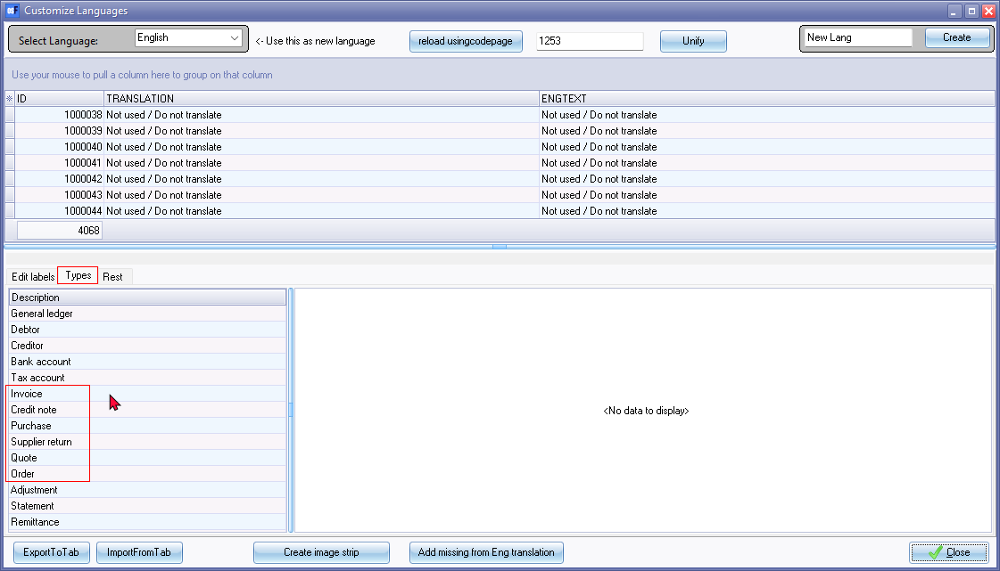

Documents setup - Change document type names
Internal Translatable Language Labels for Document Layout Files
These language labels serve as a reference point within the osFinancials language files, so that you can easily identify and work with the different document layout files. Using these language labels, you can customize or modify the names or descriptions of document layout files for your specific language file. These names or descriptions of the translatable document layout files will be displayed when you need to select a document layout file to print your documents.
Feel free to use a copy of the documents in the Report designer to serve as a base template when creating your own custom translatable document layout file that aligns with your branding and communication needs.
For your convenience the internal translatable language labels for the document layout files is as follows:
|
Language LabelID |
Layout file name |
Language LabelID |
Layout file name |
|
TRN_1910 |
Layout file |
TRN_906589 |
NO-TAX Layout file |
|
TRN_3174 |
Document layout |
TRN_906590 |
NO-TAX Document layout |
|
TRN_906277 |
Document layout (15-code) |
TRN_906591 |
NO-TAX Document layout (15-code) |
These document layout files prints the document type "Invoice," "Credit note," "Quote," "Purchase," "Supplier return," or "Order", based on the specific type of document being processed and printed.
Customised Tax Terminology in Document Layout File Names:
The filenames assigned to these document layout files are initially based on the "English" language file and prominently include the term "Tax." However, the beauty of osFinancials lies in its adaptability to various regions and jurisdictions, accommodating diverse tax naming conventions.
Depending on your chosen language setting or the language associated with your Set of Books, the tax terminology within these filenames can be tailored to accurately reflect the tax applicable in your specific country or jurisdiction. For instance:
- South Africa and the UK: In Sets of Books for these regions, the tax-related expressions and translatable labels will seamlessly incorporate "VAT" as the tax term.
- Australia and New Zealand: For Sets of Books operating in these countries, the tax-related expressions and translatable labels will use "GST" to align with the prevailing tax structure.
- United States: In the context of the US, the tax-related expressions and translatable labels will appropriately adopt "Sales tax" terminology.
By embracing this customization, osFinancials ensures that your document layout files not only conform to the legal and linguistic nuances of your region but also facilitate a smoother user experience. This adaptability underscores the global applicability of osFinancials in serving businesses across different geographies and tax frameworks.
Changing Document Type Names for Universal Translatable Document Layout Files
In osFinancials, translatable document layout files offer a dynamic way to seamlessly adapt document type names such as "Invoice," "Credit note," "Quote," "Purchase," "Supplier return," or "Order", based based on the specific document being printed. This dynamic capability is driven by expressions sourced from the "TYPES.SDESCRIPTION" field within the document layout.
To customize and modify these document type names, follow the outlined steps below:
- Leveraging Translatable Expressions in Layout Files: The "Layout file", "Document layout", and "Document layout (15 code)" document layout files harness the power of translatable expressions, facilitated by language files and settings within osFinancials. These layout files adeptly pull data from various fields entered during document processing, establishing connections to database tables and expressions for precise data presentation.
- NO-TAX Layout Files and Tax Exclusions: Similarly, the "NO-TAX Layout file," "NO-TAX Document layout," and "NO-TAX Document layout (15 code)" layout files also make use of translatable expressions, leveraging language files and settings within osFinancials. These files mirror the functionality of their tax-inclusive counterparts but are tailored for scenarios where Tax (VAT/GST/Sales Tax) is not applicable. Notably, these "NO-TAX" layout files exclude any Tax (VAT/GST/Sales Tax) expressions in their translatable components, catering to Set of Books instances where tax provisions do not apply.
To begin the process of modifying document type names for Translatable Document layout files, navigate to the Types tab within the "Customize Languages" screen. This screen is accessible through the Tools → Customise language menu on the Setup ribbon. Follow the steps outlined in the subsequent sections to tailor the document type names according to your specific business requirements.
Procedure to Modify Document Type Names
To tailor document type names according to your business requirements, follow these steps:
- On the Setup ribbon, select the Tools → Customise language menu.
- On the "Customize Languages" screen click on the Types tab.
- On the Types tab. locate the document names you wish to modify, such as "Invoice," "Credit note," "Quote," "Purchase," "Supplier return," or "Order". These will be listed among other entries on the Types tab. For each document type, click on the name and replace it with your desired modification.
For example, you could change "Invoice" to "Tax Invoice" (or if "Tax Invoice" is listed, you could change this to "Invoice". Similarly you could change the document type names of the other document names, to suit your specific requirements.

- Click on any other item on the Types tab to focus out of the edited item. and click on the Close button on the "Customize Languages" screen.
- To see the updated document type names in effect, either go to the Tools → Close active forms (Setup ribbon) or close and reopen the Set of Books.
- Impact of Modified Document Type Names: The modified document type names will have a cascading impact:
- Dynamic Printing: When using translatable document layout files, the modified document type names will dynamically display the appropriate name on invoices, credit notes, quotes, purchases, supplier returns, or orders based on the specific document type being printed.
- User Interface Update: The altered document type names will also reflect in the osFinancials interface of your Set of Books. This is noticeable when selecting document types for processing or copying documents.
By customizing the document type names, you tailor osFinancials to better match your business terminology and preferences, improving clarity and consistency throughout your financial processes.
Tax Invoice or Invoice document layout files for Point-of-Sales invoices
For translatable Point-of-Sales invoices, osFinancials offers the following document layout files are available for Point-of-Sales invoices:
- POS-STARTSP100 - (TRN_906183) - This layout file is designed for Till slip printers.
- POS 1 - (TRN_906184)
- POS 2 - (TRN_906185)
To further customize the Point-of-Sales invoice experience, you have the flexibility to modify the names associated with POS Invoices. By using the Tools → Customise language menu accessible from the Setup ribbon, you can alter the following translation labels:
- 1270 - POS Invoice
- 906104 - POS Tax Invoice
Other Document-name expressions that support Debtors / Creditors language preferences
The names of the document types are included as a translatable expression in the document layout files.
- Delivery note: CUSTOM('GETTEXTLANG',1313,'DeliveryNote',ACCOUNTINFO.SLANGUAGE,0,0)
- POS 2: CUSTOM('GETTEXTLANG',906014,'POSTaxInvoice',DEBTORINFO.SLANGUAGE,0,0)+': '
- POS - STARTSP100: CUSTOM('GETTEXTLANG',906014,'POSInvoice',ACCOUNTINFO.SLANGUAGE,0,0)